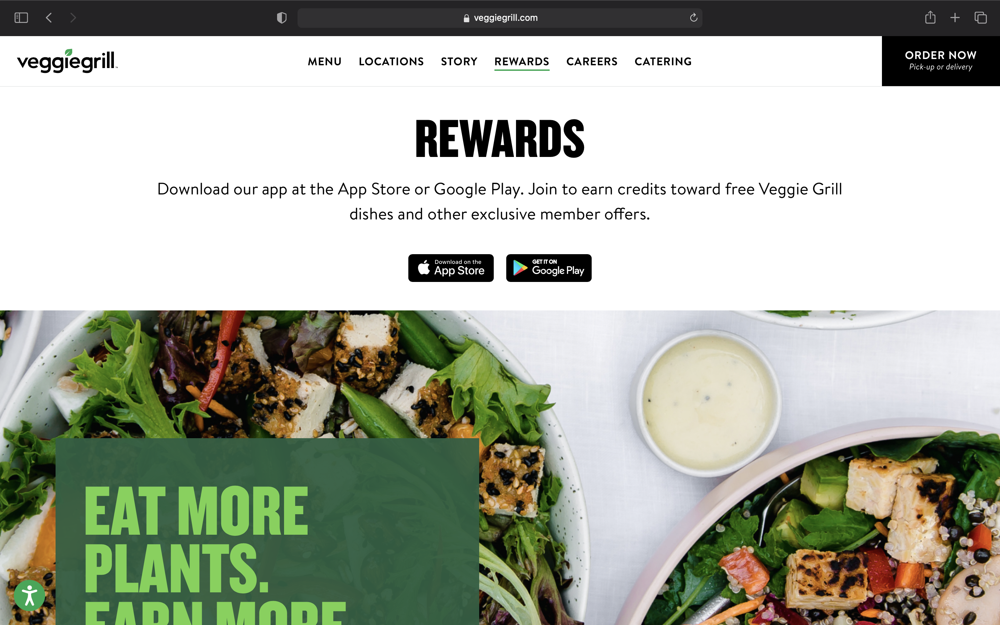
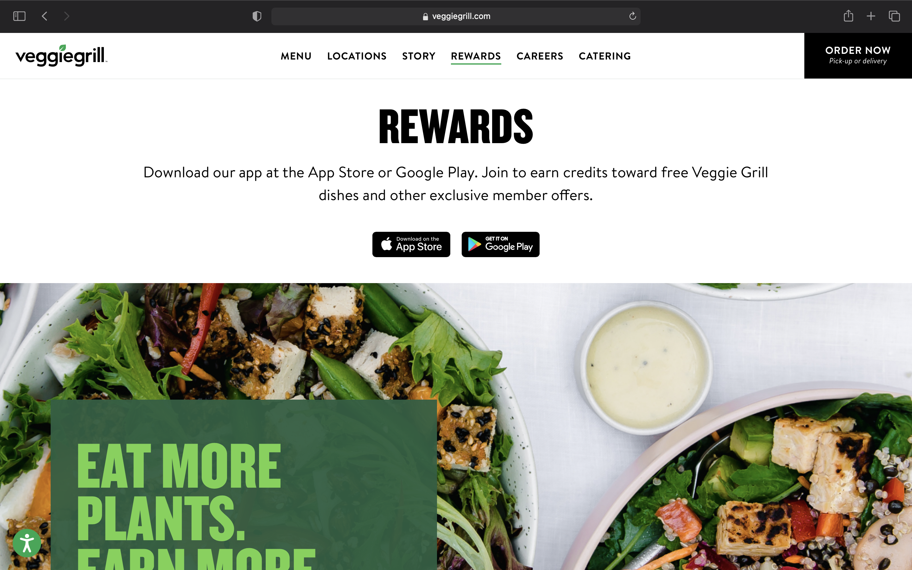

Vegetarian Café using only vegetarian, organic, local ingredients
Target audience
We aim at outreaching to anyone and everyone in the San Luis Obispo area/state of California who have a passion for fresh, beautiful, vegetarian food. We hope to also reach those who aren't necessarily vegetarian or know a lot about the diet, but are interested in learning about what the diet has to offer.
Primary tasks include learning about our café and the vegetarian diet, as well as viewing our menu.
With the goal of having more creative, vegetarian food in San Luis Obispo, Fauna Café was born. We use local, organic, and sustainable ingredients to create delicious, colorful, and ethical meals for all! Our delicious vegetarian menu melds global inspiration with the bounty of the San Luis Obispo areaa.
Colorful plate of one of our vegetarian dishes
Menu
Breakfast is our favorite meal of the day, so why not serve it all-day!
Colorful plate of one of our vegetarian dishes
About Us
Since opening its doors, Fauna Café has been at the forefront of utilizing local, organic and sustainable produce and building strong, direct relationships with San Luis Obispo county farms. Its culinary team draws inspiration from international traditions and the availability of abundant, locally grown produce to create imaginative and dynamic vegetarian, vegan, and gluten-free cuisine.
Fauna Café has also carried its eco-conscious philosophy into its sibling restaurants, Floret and the Flora Bakehouse. Floret opened in 2018 and has served as a beacon in downtown San Luis Obispo, offering scratch made, seasonal vegetarian cuisine in a place with nothing else like it. A charming and refreshing respite in bustling downtown, Floret offers travelers a chance to take a breath whether they have 3 minutes or 30.
People enjoying the atmosphere of our cozy and welcoming cafe
 
